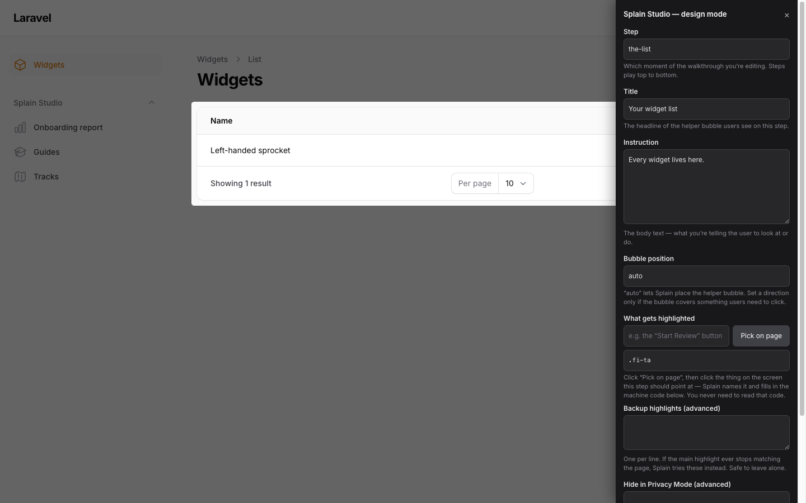
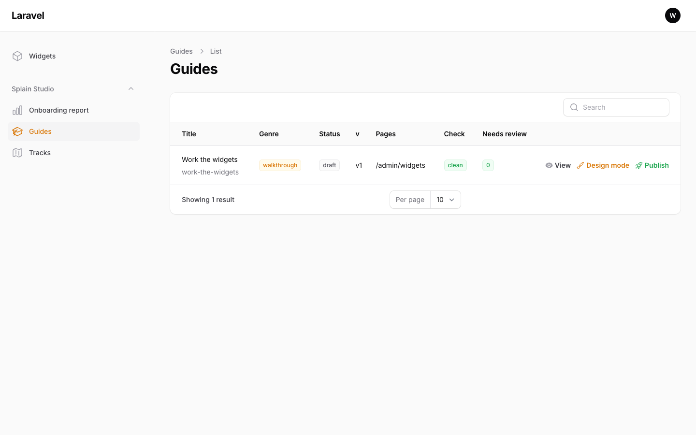
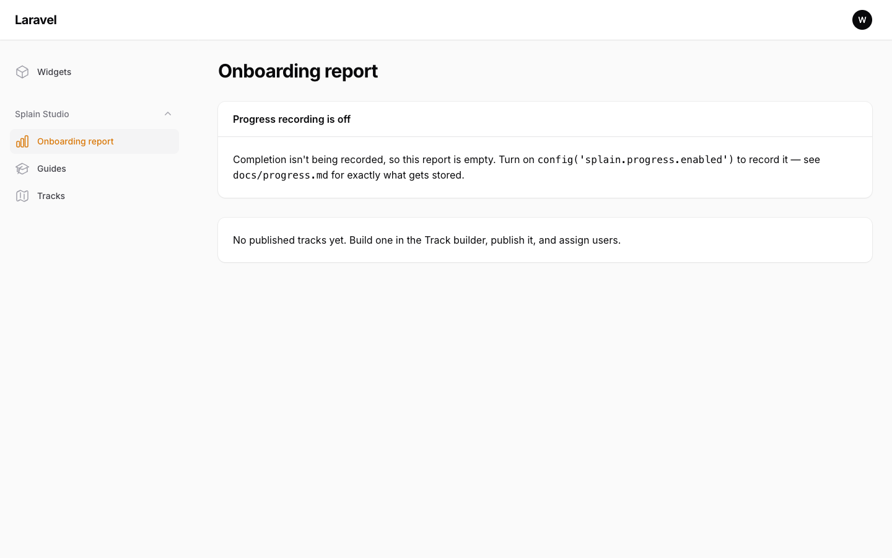

Your app can explain itself.
Splain is a self-hosted Laravel / Filament plugin for guided walkthroughs that spotlight your real UI — through modals, dropdowns, and across pages. Every step is anchored to your code, a checker replays every guide before anything ships, and a model you configure drafts the first pass. The guidance your users see runs entirely inside your app.
Same guide. Your clothes.
Splain's launcher and popovers absorb the host app's own design tokens — the same walkthrough looks native in every product it lands in. Flip the theme, then play the walkthrough: what re-skins below is the real playback engine reading the page's CSS variables, exactly as it does inside a Filament panel.
Customers
| Name | Plan | Status |
|---|---|---|
| Sable & Co. | Growth | Active |
| Marigold Labs | Starter | Active |
| Fernwood Group | Enterprise | Trial |
No mock popovers, no video: this page loads Splain's shipped free-tier bundle, and the demo app is just HTML wearing three sets of design tokens. The dot in the corner is real too — it tours this very page. Want a real app? Lamplight Supply Co. runs on Laravel Cloud with its onboarding built in — spotlight tours, a branching walkthrough, an onboarding checklist, and Privacy Mode.
Every beat below is shipped and demo-able.
Spotlights the real UI
Guides advance when users actually complete the step — not when they click "next" on faith. A failed validation doesn't fool it; a decision branches it.
Follows across pages
Finish a page's steps, click the highlighted nav link, and the guide resumes on arrival. Hand-offs expire quietly instead of ambushing anyone later.
Can't silently rot
splain:check simulates playback on every page before anything
ships — unreachable steps, dead ends, and broken hand-offs fail loudly. The
--drift gate fails your CI when code deletes an anchor a guide
depends on.
Drafted by your model
splain:generate reads your code and drafts guides through an
endpoint you configure — your key, your perimeter, your call. Splain ships no
key and no default endpoint. Drafts land unpublished, flagged for review.
Humans gate publishing
The Studio flags every step the generator wasn't sure about; you resolve them by clicking the real element on the real page. Publishing requires zero errors, zero open flags, and a named sign-off that the guide reflects how the work is really done.
Onboarding you can see
Ordered tracks give new users a checklist with a clear next step; server-side progress (off by default) stores a pointer to your user — never a copy of personal data — and powers an honest completion report.
Splain says its own limits out loud.
In the product, in the docs, and here. Honesty is the differentiator, so it gets a component:
The whole install, honestly.
composer require splain/splain # release pending — see the note below
php artisan migrate # migrations load automatically — nothing to publish
php artisan filament:assets
# then, on any Filament panel:
# ->plugin(SplainPlugin::make())
php artisan splain:doctor # verifies the install end to endThe Packagist release is pending license finalization — today Splain installs via a private repository for early-access hosts. Ask about early access — it's one GitHub issue: tell us about your app and stack.
The Studio, seen.
The pro tier isn't a roadmap slide — these are screenshots from the package's own test workbench, the same one CI drives on every push.



Planned pricing.
The boundary is real (it's enforced in the package's architecture); the prices are being decided. The posture: everything an individual developer needs is free — teams pay for the organizational layer.
Free
for every host, forever
- The playback engine & launcher
splain:check+ the CI drift gate- Privacy Mode
- Guides-as-code (export / import)
- Tracks & the learner checklist
- Server-side progress recording
Pro
for teams — planned
- The Studio: visual design mode on the live page
- Review inbox & attested publishing gate
- Generation (bring-your-own model)
- Visual track builder & assignment
- Onboarding completion report
Proven where guidance is hardest.
Splain has been a standalone package from day one — and it earns its claims against a live staffing platform: real workflows, real privacy stakes, real users who need the walkthrough to be right. Every feature on this page shipped only after playing end-to-end there. The longer story →